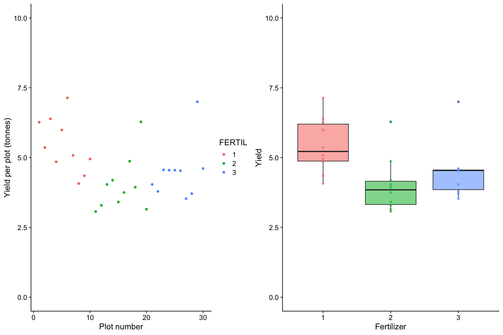
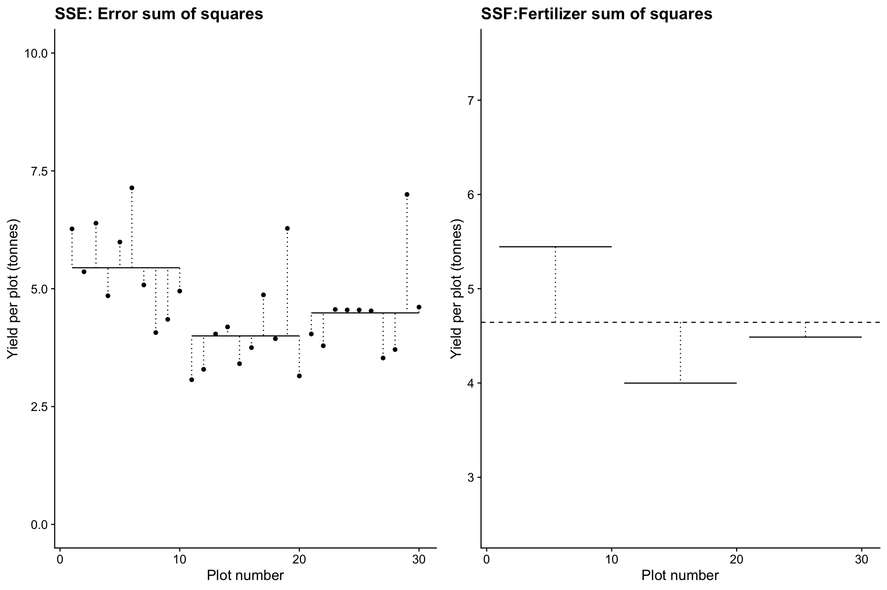
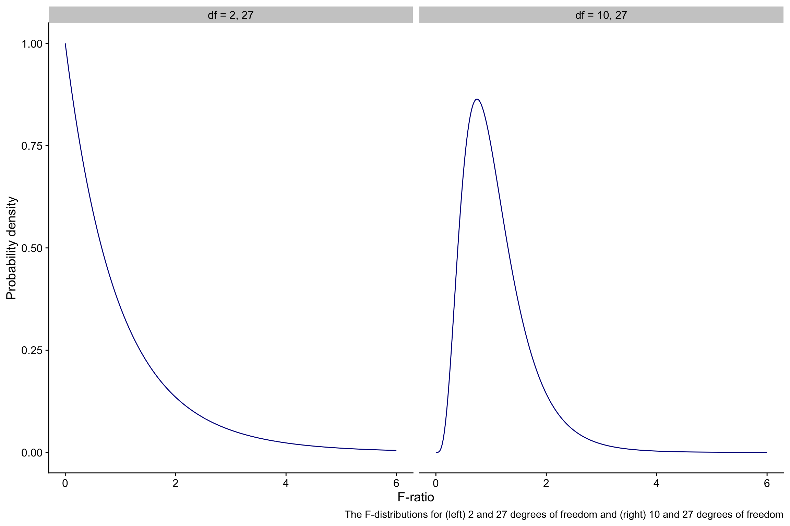
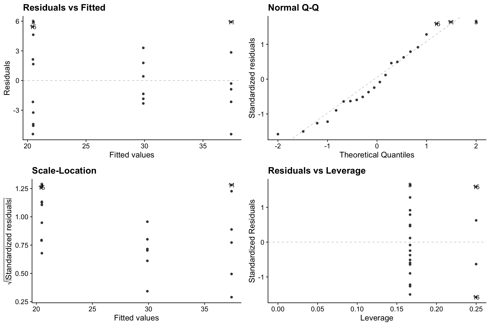

ANOVA principles
Material used from Chapter One of Grafen and Hails: Modern Statistics for the Life Sciences
1 What is ANOVA?
1.1 The basic principles of ANOVA
In a simple case we consider the comparison of three means. This is done by the analysis of variance (ANOVA). In this case we will go through an example in detail and work out all the mechanics, but once we have done that and seen how the output is derived from the input we will not need to do it again. We will use R to do the heavy lifting. We will just need to know when it is appropriate to use ANOVA, how to get R to do it and how to interpret the output that R produces.
1.2 The Scenario
Suppose we have three fertilizers and wish to compare their efficacy. This has been done in a field experiment where each fertilizer is applied to 10 plots and the 30 plots are later harvested, with the crop yields being calculated. We end up with three groups of 10 figures and we wish to know if there are any differences between these groups.
When we plot the data we see that the fertilizers do differ in the amount of yield produced but that there is also a lot of variation between the plots that were given the same fertilizer.
1.3 What does an ANOVA do?
An ANOVA (ANalysis Of VAriance) analysis attempts to determine whether the differences between the effect of the fertilizers is significant by investigating the variability in the data. We investigate how the variability between groups compares to the variability within groups.
1.4 Grand Mean
First we calculate the ‘grand mean’, the mean of the yields across all 30 plots:
[1] 4.6436671.4.1 Deviations from the grand mean

1.4.2 Mean value of yield for each fertilizer
# A tibble: 3 × 2
FERTIL fmean
<fct> <dbl>
1 1 5.44
2 2 4.00
3 3 4.491.5 Measures of variability
1.5.1 SST - Total sum of squares
[1] 36.4449SST is the total sum of squares. It is the sum of squares of the deviations of the data around the grand mean. This is a measure of the total variability of the data set.
1.5.2 SSE - Error sum of squares
SSE is the error sum of squares. It is the sum of the squares of the deviations of the data around the three separate group means. This is a measure of the variation between plots that have been given the same fertilizer.
1.5.3 SSF - Fertilizer sum of squares
SSF is the fertilizer sum of squares. This is the sum of the squares of the deviations of the group means from the grand mean. This is a measure of the variation between plots given different fertilizers.

When the three group means are fitted, there is an obvious reduction in variability around the three means compared to that around the grand mean, but it is not obvious if the fertilizers have had an effect on yield.
At what point do we decide if the amount of variation explained by fitting the means is significant? By this, we mean, “When is the variability between the group means greater than we would expect by chance alone?
First, we note that SSF and SSE partition between them the total variability in the data:
1.6 SST = SSF + SSE
[1] 36.4449[1] 10.82275[1] 25.62215[1] 36.4449So the total variability has been divided into two components. That due to differences between plots given different treatments and that due to differences between plots given the same treatment. Variability must be due to one or other of these components. Separating the total SS into its component SS is known as partitioning the sums of squares.
A comparison of SSF and SSE is going to indicate whether fitting the three fertilizer means accounts for a significant amount of variability.
However, to make a proper comparison, we really need to compare the variability per degree of freedom ie the variance.
1.7 Partitioning the degrees of freedom
Every sum of squares (SS) has been calculated using a number of independent pieces of information. In each, case, we call this number the number of degrees of freedom for the SS.
For SST this number is one less than the number of data points n. This is because when we calculate the deviations of each data point around a grand mean there are only n-1 of them that are independent, since by definition the sum of these deviations is zero, and so when n-1 of them have been calculated, the final one is pre-determined.
Similarly, when we calculate SSF, which measures the deviation of the group means from the grand mean, we have k-1 degrees of freedom, (where in the present example k, the number of treatments, is equal to three) since the deviations must sum to zero, so when k-1 of them have been calculated, the last one is pre-determined.
Finally, SSE, which measure deviation around the group means will have n-k degrees of freedom, since the sum of each of the deviations around one of the group means must sum to zero, and so when all but one of them have been calculated, the final one is pre-determined. There are k group means, so the total degrees of freedom for SSE is n-k.
The degrees of freedom are additive: df(\text{SST}) = df(\text{SSE}) + df(\text{SSF}) Check:
\begin{align*} df(\text{SST}) &= n-1\\ df(\text{SSE}) &= k-1\\ df(\text{SSF}) &= n-k\\ \therefore df(\text{SSE}) + df(\text{SSF}) &= k-1 + n-k\\ &=n-1\\ &=df(\text{SST}) \end{align*}1.8 Mean Squares
Now we can calculate the variances which are a measure of the amount of variability per degree of freedom.
In this context, we call them mean squares. To find each one we divided each of the sums of squares (SS) by their corresponding degrees of freedom.
Fertiliser Mean Square (FMS) = SSF / k - 1. This is the variation per df between plots given different fertilisers.
Error Mean Square (EMS) = SSE / n - k. This is the variation per df between plots given the same fertiliser.
Total Mean Square (TMS) = SST / n - 1. This is the total variance per df of the dataset.
Unlike the SS, the MS are not additive. That is, FMS + EMS \neq TMS.
1.9 F-ratios
If none of the fertilizers influenced yield, we would expect as much variation between the plots treated with the same fertilizer as between the plots treated with different fertilizers.
We can express this in terms of the mean squares: the mean square for fertilizer would be the same as the mean square for error:
\frac{\text{FMS}}{\text{EMS}}=1 We call this ratio the F-ratio. It is the end result of ANOVA. F-ratios can never be negative since they are the ratio of two mean square values, both of which must be non-negative, but there is no limit to how large they can be.
Even if the fertilizers were identical, the F-ratio is unlikely to be exactly 1 - it could by chance take a whole range of values. The F-distribution represents the range and likelihood of all possible F ratios under the null hypothesis. ie when the fertilizers were identical.
The shape of the F distribution depends on the degrees of freedom of FMS and EMS, and we normally specify it by giving the values of each. Below we show F distributions for 2 and 27 degrees of freedom (ie 3 plots, so k = 3, so the degrees of freedom of FMS = k-1 =2, and 10 plants per plot, so n = 3 x 10 =30, and hence the degrees of freedom of EMS = n-k = 30 - 3 = 27), and for 10 and 27 degrees of freedom.

Note that, whatever the degrees of freedom, F-distributions are examples of so-called probability density functions. The area beneath them between any two values of F-ratio is equal to the probability of getting an F-ratio in that range. Hence the total area under the curves is equal to 1, since the F-ratio must take some value between zero and infinity, and the area under the tail to the right of any given F-ratio is the probability of getting an F-ratio bigger than that value.
Hence, the probability under the null hypothesis of getting an F-ratio as large or larger than the value we actually got is the area to the right of this F-ratio under the appropriate F distribution. We often call this probability the p-value. p for probability. p-values are the the probability of getting data as extreme (same F-ratio,) or more extreme (bigger F-ratio) as the data you got you got if the null hypothesis were true.
If the fertilizers were very different, then the FMS would be much greater than the EMS and the F-ratio would be greater than one. However it can be quite large even when there are no treatment differences. So how do we decide when the size of the F-ratio is due to treatment rather than to chance?
Traditionally, we decide that it sufficiently larger than one to be due to treatment differences if it would be this large or larger under the null hypothesis only 5% or less of the time. If we had inside knowledge that the null hypothesis was in fact true then we would still get an F-ratio that large or larger 5% of the time.
Our p-value ie the probability that the F-ratio would have been as large as it is or larger, under the null hypothesis, represents the strength of evidence against the null hypothesis. The smaller it is, the stronger the evidence, and only when it is less than 0.05 do we regard the evidence as strong enough to reject the null.
2 ANOVA example 1
We will carry out the ANOVA analysis of the fertilizer data discussed on the previous tab.
Our question is whether yield depends on fertilizer.
What is our null hypothesis?
Start a new notebook with these two code chunks to begin with:
```{r global-options, include=FALSE}
knitr::opts_chunk$set(fig.width=12, fig.height=8, warning=FALSE, message=FALSE,echo=FALSE)
```
```{r load packages, message=FALSE,warning=FALSE,echo=FALSE}
library(tidyverse)
library(here)
library(cowplot)
library(gridExtra)
library(ggfortify)
```Load the fertilizer.csv data into an object call `fertilizer
Is it tidy data? If not, tidy it.
Convert the FERTIL column to a factor, using this code:
```{r make_factor}
fertilizer <- fertilizer |>
mutate(FERTIL=as.factor(FERTIL))
```Make a box plot of yield vs fertilizer, like the one on the previous tab.
Now use the lm() function to create the anova model (There are several ways to do this in R - this is just one)
Code
fertil.model<-lm(YIELD~FERTIL,data=fertilizer)Now inspect the model:
Code
anova(fertil.model)Analysis of Variance Table
Response: YIELD
Df Sum Sq Mean Sq F value Pr(>F)
FERTIL 2 10.823 5.4114 5.7024 0.008594 **
Residuals 27 25.622 0.9490
---
Signif. codes: 0 '***' 0.001 '**' 0.01 '*' 0.05 '.' 0.1 ' ' 1So we find that we can reject the null hypothesis. There is thus evidence that fertilizer does affect yield (ANOVA, df = 2,27, F=5.7, p< 0.01)
What this test has not done so far is show us where the differences lie. An ANOVA is a holistic test that tells you whether or not there is evidence for a difference between at least one pair of groups being compared. To identify which gruopd, if any, are differeny, we need to do so-called post-hoc tests.
3 ANOVA example 2
An experiment was performed to compare four melon varieties. It was designed so that each variety was grown in six plots, but two plots growing variety 3 were accidentally destroyed.
We wish to find out if there is evidence for a difference in yield between the varieties.
3.1 Null hypothesis
What is the null hypothesis of this study?
The data are in the melons.csv dataset.
Write code chunks to
3.2 Load data and inspect the data
Rows: 22
Columns: 2
$ YIELDM <dbl> 25.12, 17.25, 26.42, 16.08, 22.15, 15.92, 40.25, 35.25, 31.98,…
$ VARIETY <dbl> 1, 1, 1, 1, 1, 1, 2, 2, 2, 2, 2, 2, 3, 3, 3, 3, 4, 4, 4, 4, 4,…3.3 Prepare the data
Ensure that the VARIETY column is a factor
3.4 Plot the data
Create a scatter plot of the yield.

3.5 Summarise the data
Create a summary table that shows the mean yield for each variety.
# A tibble: 4 × 3
VARIETY N Mean
<fct> <int> <dbl>
1 1 6 20.5
2 2 6 37.4
3 3 4 20.5
4 4 6 29.93.6 1-way ANOVA
3.6.1 Create the model
Code
melons.model<-lm(YIELDM~VARIETY,data=melons)3.6.2 Check the validity of the model
Code
autoplot(melons.model,smooth.colour=NA) + theme_cowplot()
DO the data look as though they meet the criteria for an ANOVA? - the variance of the residuals is roughly constant across all groups and the qq-plot is fairly straight. We could confirm with a normality test if we like. For example, we could use a Shapiro-Wilk test.
What is the null hypothesis of this test?
Code
shapiro.test(melons.model$residuals)
Shapiro-Wilk normality test
data: melons.model$residuals
W = 0.94567, p-value = 0.2586What do we conclude from this test?
3.6.3 Inspect the model
Code
anova(melons.model)Analysis of Variance Table
Response: YIELDM
Df Sum Sq Mean Sq F value Pr(>F)
VARIETY 3 1115.28 371.76 23.798 1.735e-06 ***
Residuals 18 281.19 15.62
---
Signif. codes: 0 '***' 0.001 '**' 0.01 '*' 0.05 '.' 0.1 ' ' 1What conclusions would you draw from the output of this model and the table of mean yields for each variety?
3.7 Confidence intervals of the means
Let us find the 95% confidence intervals for each mean
These we calculate as
\text{Mean}\pm t_{\text{crit}}\text{SE}_{\text{mean}} For a 95% confidence interval and 18 degrees of freedom, t_{\text{crit}} is 2.1, so we find that the intervals are:
# A tibble: 4 × 4
VARIETY Mean LB UB
<fct> <dbl> <dbl> <dbl>
1 1 20.5 17.1 23.9
2 2 37.4 34.0 40.8
3 3 20.5 16.3 24.6
4 4 29.9 26.5 33.34 ANOVA example 2 solution
An experiment was performed to compare four melon varieties. It was designed so that each variety was grown in six plots, but two plots growing variety 3 were accidentally destroyed.
We wish to find out if there is evidence for a difference in yield between the varieties.
4.1 Null hypothesis
What is the null hypothesis of this study?
The data are in the melons.csv dataset.
Write code chunks to
4.2 Load data and inspect the data
Code
filepath<-here("data","melons.csv")
melons<-read_csv(filepath)
glimpse(melons)Rows: 22
Columns: 2
$ YIELDM <dbl> 25.12, 17.25, 26.42, 16.08, 22.15, 15.92, 40.25, 35.25, 31.98,…
$ VARIETY <dbl> 1, 1, 1, 1, 1, 1, 2, 2, 2, 2, 2, 2, 3, 3, 3, 3, 4, 4, 4, 4, 4,…4.3 Prepare the data
Ensure that the VARIETY column is a factor
Code
melons <- melons |>
mutate(VARIETY=as.factor(VARIETY))4.4 Plot the data
Create a scatter plot of the yield.
4.5 Summarise the data
Create a summary table that shows the mean yield for each variety.
4.6 1-way ANOVA
4.6.1 Create the model
Code
melons.model<-lm(YIELDM~VARIETY,data=melons)4.6.2 Check the validity of the model
Code
autoplot(melons.model,smooth.colour=NA) + theme_cowplot()
The data look as though they meet the criteria for an ANOVA - the variance of the residuals is roughly constant across all groups and the qq-plot is fairly straight. We could confirm with a normality test if we like. For example, we could use a Shapiro-Wilk test.
The null hypothesis of this test is that the residuals are drawn from a population that is normally distributed
Code
shapiro.test(melons.model$residuals)
Shapiro-Wilk normality test
data: melons.model$residuals
W = 0.94567, p-value = 0.2586Since p>0.05 we conclude that there is no reason to reject the null hypothesis that the residuals are normally disributed.
4.6.3 Inspect the model
Code
anova(melons.model)Analysis of Variance Table
Response: YIELDM
Df Sum Sq Mean Sq F value Pr(>F)
VARIETY 3 1115.28 371.76 23.798 1.735e-06 ***
Residuals 18 281.19 15.62
---
Signif. codes: 0 '***' 0.001 '**' 0.01 '*' 0.05 '.' 0.1 ' ' 1Code
summary(melons.model)
Call:
lm(formula = YIELDM ~ VARIETY, data = melons)
Residuals:
Min 1Q Median 3Q Max
-5.4233 -2.2781 -0.5933 2.6694 5.9300
Coefficients:
Estimate Std. Error t value Pr(>|t|)
(Intercept) 20.4900 1.6136 12.699 2.02e-10 ***
VARIETY2 16.9133 2.2819 7.412 7.14e-07 ***
VARIETY3 -0.0275 2.5513 -0.011 0.99152
VARIETY4 9.4067 2.2819 4.122 0.00064 ***
---
Signif. codes: 0 '***' 0.001 '**' 0.01 '*' 0.05 '.' 0.1 ' ' 1
Residual standard error: 3.952 on 18 degrees of freedom
Multiple R-squared: 0.7986, Adjusted R-squared: 0.7651
F-statistic: 23.8 on 3 and 18 DF, p-value: 1.735e-06What conclusions would you draw from the output of this model and the table of mean yields for each variety?
We see that the null hypothesis is rejected with a p-value of less than 0.001. We conclude that there are significant differences in the mean yield of melons across the varieties. We estimate that variety 2 has the highest mean yield and varieties 1 and 3 have the lowest mean yields.
The unexplained variance ie the error s for each group is 15.6 with 18 degrees of freedom. So the standard error for each group is \frac{s}{\sqrt{n}} where s=\sqrt{15.6} = 3.95 divided by the number of elements in each group, giving us standard errors of 1.97 for variety 3, and 1.61 for the other varieties.
4.7 Confidence intervals of the means
Let us find the 95% confidence intervals for each mean
These we calculate as
\text{Mean}\pm t_{\text{crit}}\text{SE}_{\text{mean}} For a 95% confidence interval and 18 degrees of freedom, t_{\text{crit}} is 2.1, so we find that the intervals are:
# A tibble: 4 × 4
VARIETY Mean LB UB
<fct> <dbl> <dbl> <dbl>
1 1 20.5 17.1 23.9
2 2 37.4 34.0 40.8
3 3 20.5 16.3 24.6
4 4 29.9 26.5 33.3